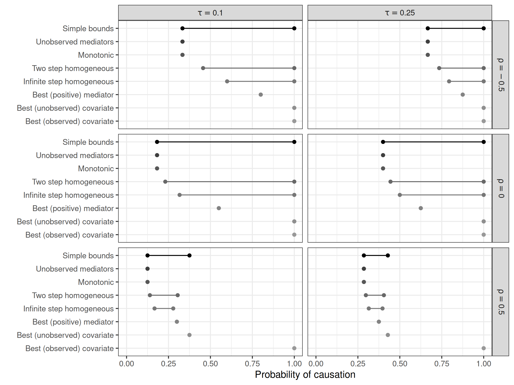

System Architecture
This is the system architecture on which this package is built.
flowchart LR
A[Registry] --> B(Replication Repositories)
B --> C{replicateEverything}
Run single replication
run_replication(
"10.1177/00491241211036161",
"fig_1"
)[1] "fig_1"Using repository: replicate-anything/registryReplication type: figureIgnoring unknown labels:
• shape : "ρ"
Replicate and entire paper
replicate_paper("10.1177/00491241211036161")Replicating: Bounding Causes of Effects With MediatorsRunning: fig_1Ignoring unknown labels:
• shape : "ρ"